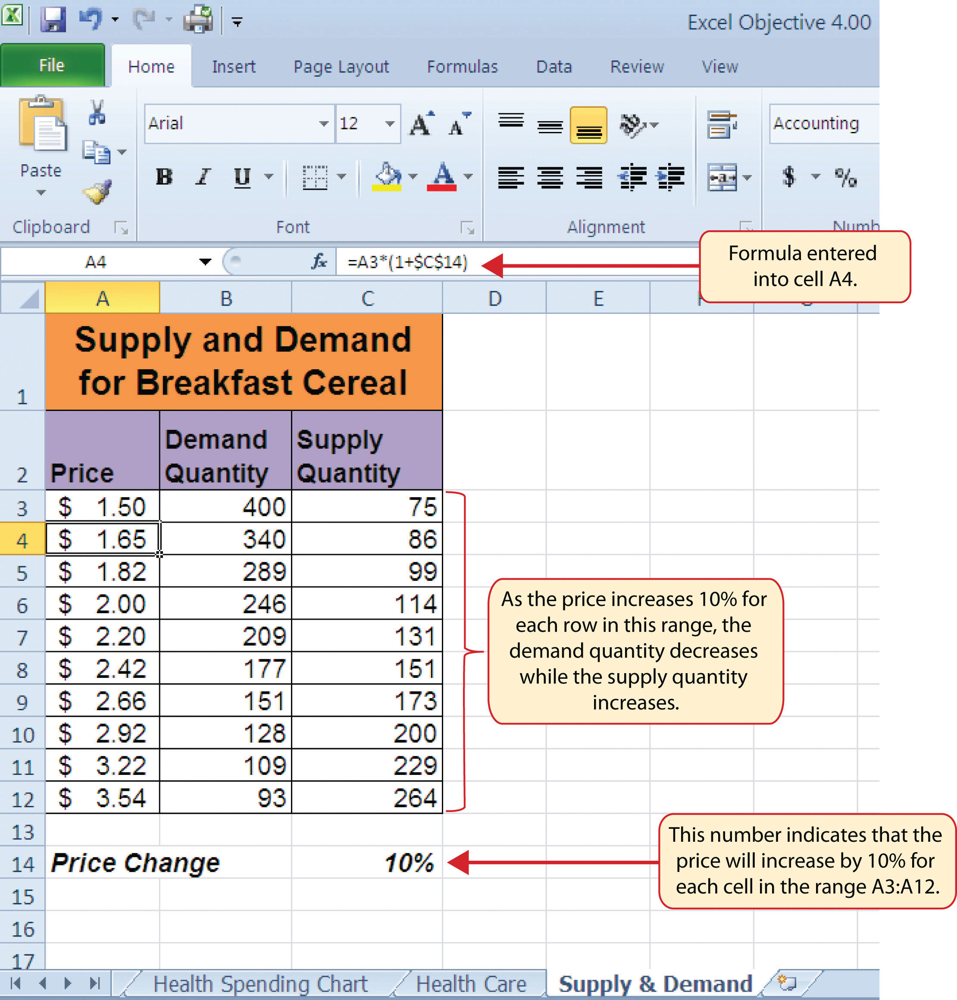
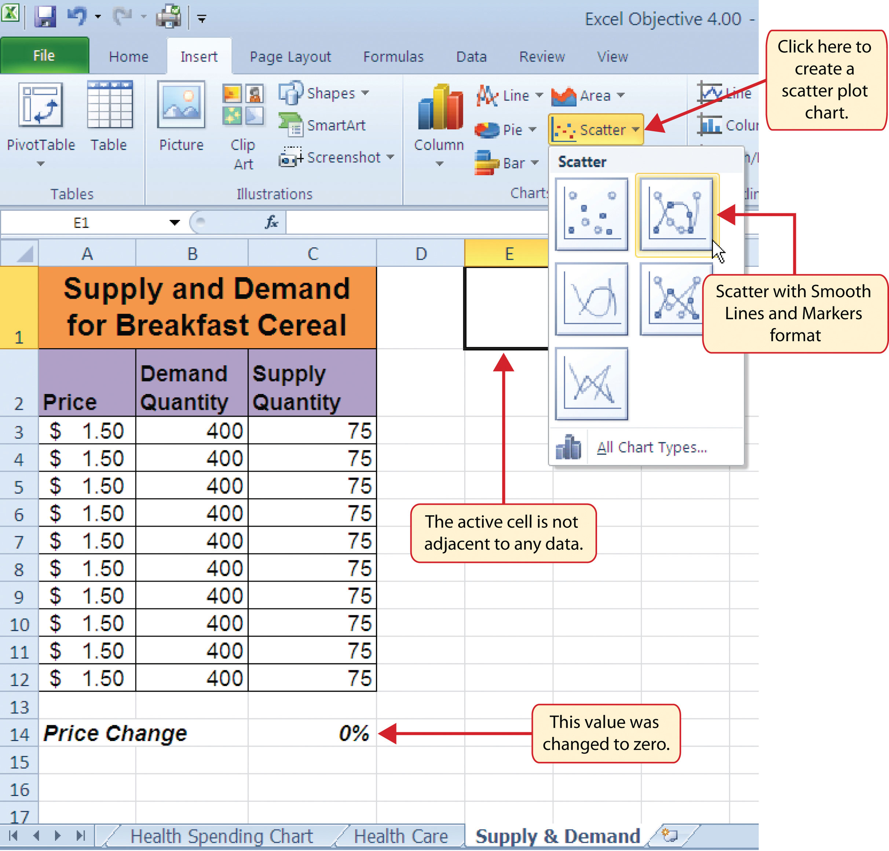
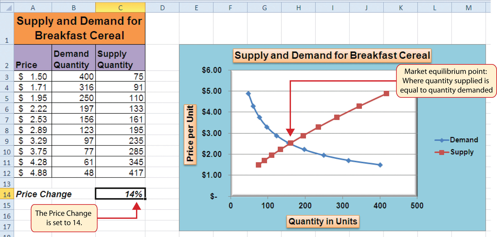
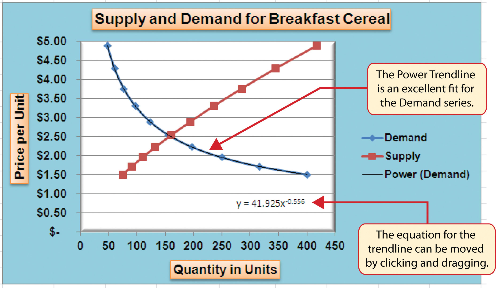

This section focuses on the scatter chartChart used when quantitative or numeric values are required for both the X and Y axes. type. What makes this chart different from the other charts demonstrated in this chapter is that values are used on both the X and Y axes. So far, the charts we have demonstrated in this chapter use categories or qualitative labels for the X axis. This means that the distance between each category on the X axis will always be the same, even if numbers are used. In a scatter chart, the X axis operates just like the Y axis. In other words, the distance between the values on the X axis will vary depending on the value of the number. Depending on the format, we can create the scatter chart to look just like a line chart. Since both the X and Y axes contain quantitative values, the scatter chart is a valuable tool for studying various shapes or functional forms for a line chart. In fact, a common feature used with the scatter chart is the trendline and equation. Excel can evaluate the line that is produced on a scatter chart and produce a mathematical equation. We will demonstrate these features in this section.
Follow-along file: Continue with Excel Objective 4.00. (Use file Excel Objective 4.14 if starting here.)
A common use for a scatter chart is the study of supply and demand curves. This is because the data points for both the supply and demand lines require quantitative values on both the X and Y axes. The Y axis contains the price of a certain good or item; the X axis contains the quantity sold for that good or item. Fundamental economic laws state that as prices rise, sellers are willing to increase supply and sell more goods. However, the reverse is true for consumers. As prices rise, consumers purchase fewer goods. The Supply & Demand worksheet contains hypothetical data for the supply and demand of breakfast cereal. There are ten data points to show the change in supply and demand as the price changes in Column A. The values you see in Columns A through C are formula outputs that are driven by the percentage in cell C14. For example, if the percentage in cell C14 is changed to 10, each price listed in Column A will increase, as shown in Figure 4.45 "Hypothetical Supply and Demand Data".
Figure 4.45 Hypothetical Supply and Demand Data
We will use the scatter chart to study the change in quantity supplied and demanded as the price increases over ten data points, as shown in Figure 4.45 "Hypothetical Supply and Demand Data". For many of the charts demonstrated in this chapter, we were able to highlight a range of cells and insert the chart type we needed. This was especially the case when the data was in a contiguous range of cells. However, this method rarely works when creating a scatter chart, even if the data are in a contiguous range. As a result, the method we present here starts with a blank chart and demonstrates how each data series is added to the chart individually. The following steps explain how we create this chart:
Select the Scatter with Smooth Lines and Markers format from the drop-down list of options (see Figure 4.46 "Selecting a Scatter Chart Format"). This adds a blank chart to the worksheet.
Figure 4.46 Selecting a Scatter Chart Format
Highlight the range A3:A12 on the Supply & Demand worksheet.
Figure 4.47 "Defining the Demand Data Series" shows the final settings in the Edit Series dialog box for the Demand data series. You will see that as the X and Y axis values are defined in the dialog box, they appear on the chart. The chart in this figure shows the price along the Y axis and quantity along the X axis.
Figure 4.47 Defining the Demand Data Series

For Scatter Charts, Start with a Blank Chart
When creating a scatter chart, it is best to start with a blank chart and add each data series individually. This is because Excel will not always guess correctly which values belong on the X and Y axes since both contain numbers. For other chart types, such as column or line charts, the X axis contains nonnumeric data so it’s easy for Excel to configure the chart you need.
Figure 4.48 "Scatter Chart Showing One Price" shows the appearance of the scatter chart before any formatting enhancements are applied. Notice only two plot points are located on the chart. This is because the price change value in cell C14 is still zero. Therefore, the data are not reflecting any change in price, quantity demanded, or quantity supplied. The chart shows that at the current price of $1.50, suppliers are willing to provide fewer units compared with the number of units consumers are willing to buy.
Figure 4.48 Scatter Chart Showing One Price

The following steps explain the formatting enhancements we will apply to the scatter chart shown in Figure 4.48 "Scatter Chart Showing One Price":
Change the color of the chart area to Aqua, Accent 5, Lighter 40% (see Figure 4.49 "Formatting Enhancements Added to the Scatter Chart").
Figure 4.49 Formatting Enhancements Added to the Scatter Chart

Figure 4.50 "Scatter Chart with Price Change at 2%" shows the completed scatter chart when the Price Change is set to 2%, and Figure 4.51 "Scatter Chart with Price Change at 14%" shows the same chart when the Price Change is set to 14%. The point at which the demand and supply lines intersect on Figure 4.51 "Scatter Chart with Price Change at 14%" is known as the market equilibrium point. The market equilibriumA state in which the quantity demanded equals the quantity supplied at a specific price. is where the quantity demanded equals the quantity supplied at a specific price. The price where quantity demanded equals quantity supplied is referred to as the equilibrium priceThe price where quantity demanded equals quantity supplied..
Figure 4.50 Scatter Chart with Price Change at 2%

Figure 4.51 Scatter Chart with Price Change at 14%
Follow-along file: Continue with Excel Objective 4.00. (Use file Excel Objective 4.15 if starting here.)
For all the charts demonstrated in this chapter, Excel has automatically established the scale for the Y axis. For scatter charts, Excel has also established the scale for the X axis. The axis scaleThe minimum and maximum value that appears on the X or Y axis of a chart. is the minimum and maximum value that appears on an axis. For example, in Figure 4.51 "Scatter Chart with Price Change at 14%", the Y axis scale is set to a minimum value of zero and a maximum value of 6.00. Although this is a very convenient feature of Excel, you may want to change the scale in some instances. If you change the value in cell C14 on the Supply & Demand worksheet, the lines jump or shift on the plot area of the chart. This is because Excel keeps rearranging the scale of both the X and Y axes. When studying the shape of lines, it is best to set the scale so it does not change. The following steps explain how to accomplish this:
Click the Close button at the bottom of the Format Axis dialog box.
Figure 4.52 Setting the Y Axis Scale

Figure 4.53 "Final Appearance of the Scatter Chart" shows the final appearance of the scatter chart after the scale is set for both the X and Y axes. Notice that market equilibrium is achieved at a price of approximately $2.50.
Figure 4.53 Final Appearance of the Scatter Chart

Follow-along file: Continue with Excel Objective 4.00. (Use file Excel Objective 4.16 if starting here.)
A trendline can be applied to a chart to estimate or predict where plot points may occur at various points along the X and Y axes. Excel enables you to add a trendline to a chart and also provides the equation you can use to plot additional points. The following steps explain how to accomplish this:
Select the Demand option from the Add Trendline dialog box and click the OK button. This adds a new line to the plot area of the chart as well as the legend.
Figure 4.54 "Adding a Linear Trendline" shows the scatter chart after adding a linear trendline. Notice that the line goes through only two points on the demand line. This indicates that this trendline may not be a good fit for the line that has been created on the chart.
Figure 4.54 Adding a Linear Trendline

Finding the right shape for a trendline may require trying a few different options. As shown in Figure 4.54 "Adding a Linear Trendline", the linear trendline is not a good fit for the shape of the demand line. The remaining steps will demonstrate how to remove a trendline and access more trendline options:
Figure 4.55 The Format Trendline Dialog Box

Figure 4.56 "Scatter Chart with a Power Trendline" shows the scatter chart with the Power trendline added for the demand series. Notice that the line fits perfectly over the demand series in the plot area. In fact, it may be difficult to see the line in the figure. This indicates that the trendline is an excellent fit for the demand line. As a result, we can be confident in using this line to predict other demand values along the X and Y axes. You can also see that the equation for this trendline has been added to the plot area of the chart. We can use the equation to calculate the price for each quantity value substituted for X. For example, if the number 150 is substituted for X in the equation, the result is a price of $2.59. Based on the values used to create the chart, this result appears to be accurate.
Figure 4.56 Scatter Chart with a Power Trendline
Which of the following is the best chart type to use if you need to create a line chart where both the X and Y axes contain numeric values?
Which of the following methods allows you to set the scale of the Y axis?